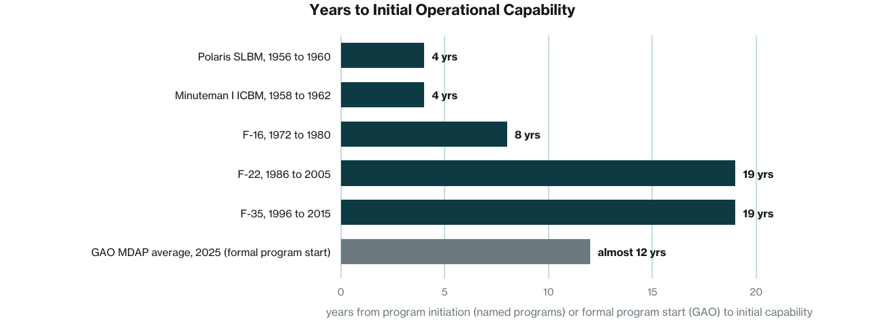
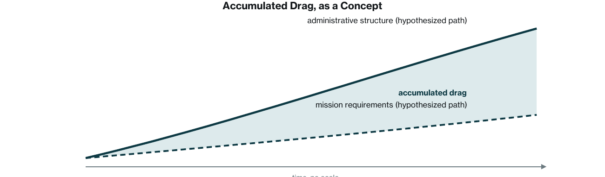

This is a synthesis of the public record, not primary research. Government analyses from the Government Accountability Office, the Department of Defense Inspector General, and the Congressional Research Service provide the most rigorous evidence and are cited with report numbers. Academic and policy research (Wilson, Kaufman, Light, Levine, OECD) provides structural frameworks and comparative benchmarks. Investigative journalism (the Washington Post’s December 2016 report on a suppressed 2015 study) provides the key figure on overhead scale, treated here as a dated data point from a study whose underlying data were never released, not as a current estimate. Management research and memoir (Harvard Business Review, BCG, Gates’s Duty) provide qualitative context only. Figures labeled conceptual are not data.
A note on naming. The Department of Defense is the statutory name of the institution this paper examines. Executive Order 14347 of September 5, 2025 authorized "Department of War" as a secondary title, and this paper uses that title as the institution’s own current usage. The overhead problem documented here spans the War Department era (1789 to 1947) and the Department of Defense era (1949 to the present), and where precision requires it the paper distinguishes the two.
The Department carries administrative overhead that, on the one detailed public estimate, was large, and it has never been remeasured. This paper organizes the record around three findings, each stated with its evidence and its limits.
First, the overhead is structurally significant. A 2015 study by the Defense Business Board and McKinsey, reported by the Washington Post in December 2016 after the Pentagon declined to release it, found the Department spending about 134 billion dollars a year on core business operations, almost a quarter of its then 580 billion dollar budget, and identified a path to 125 billion dollars in savings over five years. Second, decision velocity has slowed. The Government Accountability Office’s own measure of the time from formal program start to initial capability for major weapon programs has lengthened to almost twelve years, and it has grown in each of the last several annual assessments. Third, reform stalls. The record of defense management reform, as documented by a former Deputy Chief Management Officer of the Department and by GAO’s high-risk designations that have stood since 1990 and 1995, shows a recurring pattern of diagnosis, partial implementation, and reversion. That the pattern is architectural rather than accidental is this paper’s argument.
The paper concludes with four structural pathways: clarity, velocity, redesign, and alignment. Each includes a first step, a measurable indicator, and a risk.
1.The Overhead Is Structurally Significant
What the public record shows
The most detailed public estimate was reported by Craig Whitlock and Bob Woodward in the Washington Post on December 5, 2016, based on a January 2015 study by the Defense Business Board, a federal advisory panel, working with consultants from McKinsey and Company. The study found the Department spending about 134 billion dollars a year on its core business operations, accounting, human resources, logistics, procurement, and property management, almost a quarter of its then 580 billion dollar budget. About 1,014,000 contractors, civilians, and uniformed personnel filled those back-office roles, supporting 1.3 million active-duty troops. The study identified what it called a clear path to saving 125 billion dollars over the following five years, through attrition, early retirements, fewer contractors, and better use of information technology.
Two limits belong beside that figure. The Pentagon restricted the data behind the study, so the finding has never been replicated, and it is now a decade old. The budget has since grown well past 800 billion dollars, and no comparable study of business operations has been published. The absence of comparable remeasurement, or of a demonstrated, durable department-wide reduction in overhead, is consistent with continued overhead pressure, but this paper does not claim to know the current figure, and it does not treat the 2015 number as a floor or a ceiling for today.
How this compares to external benchmarks
Comparisons across institutions are indicative, not precise, because no two estimates use the same denominator. Gary Hamel and Michele Zanini estimated in Harvard Business Review in September 2016 that excess bureaucracy costs the U.S. economy more than 3 trillion dollars a year in lost output, and their August 2017 survey of more than 7,000 HBR readers found the burden of bureaucracy reported as heaviest in the largest organizations. The OECD’s Standard Cost Model, used since the early 2000s to price the administrative burden of regulation, rests on the same premise: that compliance tasks absorb a measurable share of institutional capacity. A 2026 OECD working paper by Andrews, Turban, and Tyros built a task-based measure of that share and found the U.S. wage share devoted to compliance tasks rising from 4.0 percent in 2012 to 4.2 percent in 2024, with state-level analysis associating rising regulatory costs with weaker labor productivity and business dynamism. These figures describe the economy as a whole, not defense, and they illustrate the mechanism rather than measuring the Department.
2.Overhead Degrades Decision Velocity
The most consequential cost of overhead may not appear in any budget line. It is the time between a decision being needed and a decision being made.
The clearest measured series is GAO’s. In its 2025 annual assessment of major weapon programs, GAO found that the expected time for a major defense acquisition program to provide even an initial capability had reached almost twelve years from formal program start, up eighteen months in one year; its 2026 assessment put the average above twelve years. For programs that had already delivered, the 2024 assessment found the average time to initial capability had grown from eight years to eleven, three years beyond original plans. GAO attributes the delays mainly to immature technologies at program start, unrealistic schedules, and a rigid, sequential development process, and it has kept weapon systems acquisition on its High-Risk List since 1990.
Cold War programs offer documented points of comparison, provided the clock is defined. Measured from program initiation to initial operational capability, Polaris went from a program approved in 1956 to its first deterrent patrol in November 1960, about four years; Minuteman I from a program begun in 1958 to missiles on alert at Malmstrom in October 1962, about four years; the F-16 from the Lightweight Fighter program of 1972 to initial operational capability in October 1980, about eight years; the F-22 from the Advanced Tactical Fighter contracts of 1986 to initial operational capability in December 2005, about nineteen years; and the F-35 from the Joint Strike Fighter program of 1996 to the Marine Corps declaration of initial operational capability in July 2015, about nineteen years. These are documented dates for named programs, not a cohort average, and they start the clock earlier than GAO does. GAO measures from formal program start, usually the Milestone B decision that comes years after a program is conceived, so its almost-twelve-year figure and the named programs are not on the same scale. This paper does not claim a fivefold expansion. It claims what the sources support: that the one consistently measured series has lengthened, and that the Cold War’s fastest strategic programs delivered in a fraction of today’s measured average.

Robert Gates identified as many as 30 layers of staff between himself and the people doing the work, in Duty (2014). His account is qualitative and reflects one leader’s perspective, but it matches an independent count: in Paul Light’s 2004 inventory of executive titles across the cabinet departments, Defense had the tallest hierarchy in government, with 30 executive titles, even after a period of thinning. Where approval chains converge, decisions pool.
BCG, in a 2024 analysis adapted for Harvard Business Review, advised companies to search for layers, committees, and duplicative efforts that could be removed, and reported one client that found half of its planning and analysis resources devoted to detailed performance reports that did not serve leadership goals. The parallel to defense reporting is suggestive, not measured here.
3.Reform Stalls Because the Problem Is Architectural
How structure outpaces mission
James Q. Wilson’s Bureaucracy (1989) described how agencies accumulate procedural requirements from the constraints placed on them. Herbert Kaufman’s Red Tape (1977) showed how controls accrete faster than they are removed, because each was added for a reason someone can still defend. Paul Light’s Thickening Government (1995) and his 2004 Brookings update counted the layers: the number of distinct executive titles across the cabinet departments rose from 17 in 1960 to 64 in 2004, and Defense carried the tallest hierarchy of any department.
This paper uses the term accumulated drag for the compounding difference between the complexity an institution needs to govern and the administrative structure it has built. The term is the paper’s own, and the mechanism it names is a hypothesis: that structure, once added, persists and compounds while mission requirements change at their own pace. In practice it would be diagnosed by mapping the gap between the current decision architecture and the minimum structure required for mission execution, then measuring the time, cost, and capacity the difference absorbs. That measurement has not been done for the Department, and this paper does not claim it has.
The reform record is consistent with the hypothesis without proving it. Peter Levine, who served as the Department’s Deputy Chief Management Officer, traced three reform histories in 2020, personnel, acquisition, and audit, and found that every Secretary of Defense across five administrations and hundreds of legislative provisions had produced few lasting results. GAO’s high-risk list tells the same story in its own terms: weapon systems acquisition has been on it since 1990, and financial management and business systems modernization since 1995. GAO’s 2025 letter to the Secretary listed 79 open priority recommendations and about 1,280 other open recommendations to the Department. GAO estimates that implementing all of its open recommendations government-wide could yield between 132 billion and 251 billion dollars in future savings; it does not publish the Department’s share of that figure.

Structural signals: audit failure and contractor costs
The Department has never achieved a clean audit opinion. Its Inspector General issued a disclaimer of opinion on the fiscal 2025 financial statements on December 18, 2025, the eighth consecutive disclaimer since full-scope audits began with fiscal 2018, and GAO has identified the Department’s inability to obtain a clean opinion as one of three major impediments to an opinion on the government’s consolidated statements. Without reliable financial data, overhead ratios cannot be established with confidence and reform progress cannot be measured against a baseline.
Contractor cost is a second signal, and it needs careful attribution. The 2015 Defense Business Board study, as summarized by Taxpayers for Common Sense, reported average annual costs per full-time contract worker in back-office functions of just over 189,000 dollars in the Army and just under 171,000 dollars in the Navy; these are averages for service-contract labor in those functions and are not a like-forlike comparison with civilian pay. The Project on Government Oversight’s 2011 study compared contractor billing rates with federal employee compensation across 35 occupational classifications and found federal employees cheaper in 33 of the 35, with the government paying contractors an average of 1.83 times as much; the comparison uses billing rates rather than full cost, and its scope is the occupations it sampled. GAO, in its 2018 review of the Department’s own civilian-versus-contractor cost comparisons (GAO-18-399), assessed the Department’s methodology and found that it excluded some costs; GAO did not conclude that contractors are generally more expensive, and this paper does not attribute that conclusion to it. What the sources together support is narrower: contract labor for back-office work is expensive, its full cost is not consistently measured, and congressional civilian personnel ceilings create an incentive to substitute contractors for civilians regardless of cost, a structural distortion rather than a management choice.
4.Pathways Forward: A Structural Framework
The history of defense reform suggests the problem is not a shortage of recommendations. What has been absent is a structural approach. The following framework identifies four pathways. Each follows the same structure: what it fixes, what to do first, how to measure it, and what can go wrong. The framework is a design proposal, not a prescriptive plan.
01 Structural clarity. Fixes drift between authority and execution. First step: inventory approval chains above five concurrences and publish a reduced authority map. Measure: layers from intent to execution, quarterly. Risk: removing operational layers carries mission risk; sequence by function.
02 Decision velocity. Fixes friction that stalls decision cycles. First step: maximum cycle times for below-threshold procurement in a 90-day pilot, with a decision-latency dashboard. Measure: average days from requirement to decision. Risk: speed without judgment is recklessness; pair with escalation criteria.
03 Operational redesign. Fixes processes that constrain performance. First step: burden-audit the top 50 recurring reports and apply the OECD Standard Cost Model. Measure: staff time on administrative versus mission activity. Risk: some reporting is statutorily mandated; distinguish discretionary from non-discretionary.
04 Governance alignment. Fixes re-accumulation of drift after reform. First step: sunset clauses for new administrative processes, with 24-month renewal. Measure: overhead ratio trend, year over year, published. Risk: governance mechanisms can themselves become overhead; design for simplicity.
5.Conclusion
Across the sources this paper draws on, the broad contours of the problem are consistent. On the one detailed public estimate, the Department’s administrative overhead was substantial, and it has not been remeasured. The one consistently measured indicator of decision velocity, GAO’s time from program start to initial capability, has lengthened. And the reform history, as documented by an insider and by three decades of high-risk designations, shows a recurring pattern of diagnosis, partial implementation, and reversion.
That administrative structure has accumulated faster than mission requirements is this paper’s hypothesis, stated as one. What the record establishes is narrower and still serious: the structures that once supported execution have hardened into friction that nobody can currently price. The pathways forward are structural: clarity, velocity, redesign, and alignment. They are constrained by statute, politics, mission risk, and inertia, and the constraints are real. But the Department does not need to become simpler. It needs to become more navigable, an institution whose systems convert complexity into capability rather than drag.